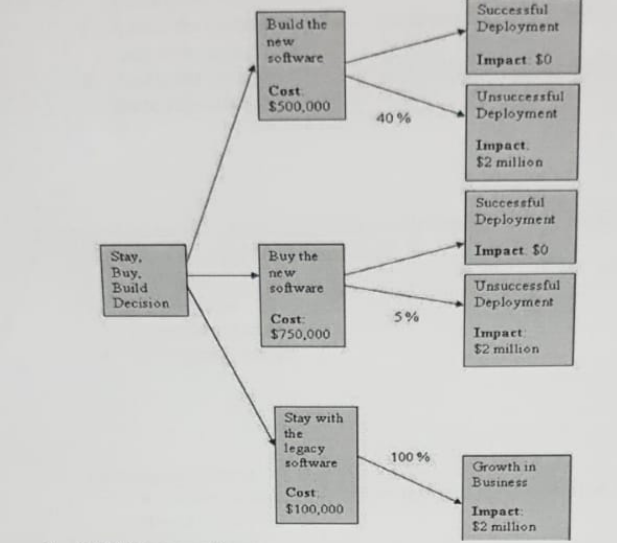

Course Code: 665 - Risk Management and Safety
Final Exam 2022 | Time allowed: 2 Hrs. | Maximum Marks: 70 Marks
The Exam Consists of Eight Questions in five pages.
(Page 1/5)
Question 1 (5 Marks) Define the risk management plan and mention its components.
Model Answer:
The Risk Management Plan is a component of the project management plan that describes how risk management activities will be structured and performed on the project. It does not define actual risks or responses, but rather outlines the strategy and approach to managing risk throughout the project lifecycle.
Key Components of a Risk Management Plan include:
Methodology: Defines the approaches, tools, and data sources for risk management.
Roles and Responsibilities: Assigns who is responsible for each risk management activity.
Budgeting: Estimates funds needed for risk management activities, including contingency and management reserves.
Timing: Defines when and how often risk management processes will be performed.
Risk Categories: A framework (often a Risk Breakdown Structure - RBS) for categorizing risks.
Definitions of Risk Probability and Impact: Standardized scales for assessing probability and impact.
Probability and Impact Matrix: A predefined grid to classify risks by priority.
Reporting Formats: Defines how risk information will be documented and communicated.
Tracking: Describes how risk activities will be documented, audited, and lessons learned captured.
Stakeholder Risk Appetite and Tolerance: Documents acceptable levels of risk exposure.
Rationale: Based on Handbook Chapter 2, Slides 14 & 15.
(Page 1/5)
Question 2: (5 Marks) List the factors that determine the success of risk identification process.
Model Answer:
The success of the risk identification process depends on several factors, including:
Early identification: Starting the process as soon as possible in the project lifecycle.
Iterative identification: Repeating the process throughout the project as new information becomes available.
Emergent identification: Being open to identifying new risks as they become apparent.
Comprehensive identification: Striving to identify as many relevant risks as possible from various sources and categories.
Explicit identification of opportunities: Actively looking for positive risks, not just threats.
Multiple perspectives: Involving a diverse group of stakeholders, team members, and subject matter experts.
Risks linked to project objectives: Focusing on uncertainties that can impact the project's goals (scope, time, cost, quality, etc.).
Complete risk statement: Clearly and unambiguously articulating each identified risk, often including cause, risk, and effect.
Ownership and level of detail: Assigning owners to risks and documenting them with appropriate detail.
Objectivity: Minimizing bias in the identification process and fostering an open, honest environment.
Use of appropriate tools and techniques: Employing methods like brainstorming, checklists, RBS, SWOT analysis, etc., effectively.
Rationale: Based on Handbook Chapter 4, Slide 20.
(Page 1/5)
Question 3: (5 Marks) What are the differences between qualitative and quantitative risk analyses? What are the similarities?
Model Answer:
Differences:
Nature of Analysis:
Qualitative: Subjective assessment of probability and impact using descriptive scales (e.g., High, Medium, Low). It prioritizes risks.
Quantitative: Objective, numerical analysis of the combined effect of risks on project objectives, often using statistical methods and models (e.g., Monte Carlo simulation, EMV).
Purpose:
Qualitative: To prioritize identified risks for further analysis or action and to identify risks for a watchlist. It's a quick way to filter risks.
Quantitative: To produce numerical estimates of overall project risk exposure, assess the probability of achieving objectives, and identify risks requiring the most attention based on their numerical impact.
Quantitative: Requires more detailed data, often historical data, probability distributions, and specific impact values (e.g., cost, duration).
Complexity and Effort:
Qualitative: Generally faster, less complex, and less resource-intensive.
Quantitative: More complex, time-consuming, and resource-intensive; often requires specialized tools and expertise.
Output:
Qualitative: Prioritized list of risks, risk ratings (e.g., using a P&I Matrix), watchlist.
Quantitative: Probabilistic analysis of project outcomes (e.g., S-curves for cost/schedule), confidence levels, prioritized list of quantified risks (e.g., Tornado diagram).
When Used:
Qualitative: Typically performed on all identified risks for all projects.
Quantitative: Performed on high-priority risks (identified through qualitative analysis) for larger, more complex, or strategically important projects where numerical analysis is beneficial.
Similarities:
Goal-Oriented: Both aim to better understand and manage project risks to improve the likelihood of achieving project objectives.
Input from Risk Register: Both typically use the list of identified risks from the Risk Register as a primary input.
Assess Probability and Impact: Both consider the probability of risks occurring and their potential impact on project objectives, though the method of assessment differs.
Support Decision Making: Both provide information to support decisions regarding risk responses and overall project management.
Iterative: Both can be (and often should be) revisited throughout the project lifecycle as more information becomes available or circumstances change.
Part of Overall Risk Management: Both are integral processes within the broader Project Risk Management framework.
Rationale: Based on Handbook Chapters 5 & 6.
(Page 1/5)
Question 4: (5 Marks) Describe the circumstances where a project manager would best choose to adopt the "Risk Accept" strategy.
Model Answer:
A project manager would best choose to adopt the "Risk Accept" strategy under the following circumstances:
Low Priority Risks: For risks that have been assessed (typically through qualitative analysis) as having a very low probability of occurrence and/or a very low impact on project objectives. The effort and cost of other response strategies may not be justified.
No Cost-Effective Response: When it is not possible or cost-effective to address a specific risk in any other way (e.g., avoid, transfer, mitigate). The cost of implementing other responses might outweigh the potential impact of the risk.
Inability to Identify Other Suitable Responses: After thorough analysis, if the project team is unable to identify any other viable or practical response strategy.
Opportunities (Positive Risks): For positive risks (opportunities), acceptance can mean being willing to take advantage of the opportunity if it arises, but not actively pursuing it or investing resources to make it happen. This is often for opportunities with low probability or where the benefit doesn't justify proactive effort.
Passive Acceptance: This form of acceptance is chosen when no specific action will be taken other than documenting the decision. The team will deal with the risk if and when it occurs. This is common for very minor risks.
Active Acceptance: This involves taking proactive steps to prepare for the risk, even while accepting its potential occurrence. The most common active acceptance strategy is to establish a contingency reserve (time, money, or resources) to handle the risk if it materializes. A contingency plan might also be developed. This is suitable for risks where the impact is manageable with pre-allocated resources.
Risks Outside Project Control: Some risks may be entirely outside the project team's ability to influence or control (e.g., certain macroeconomic factors). While monitoring is essential, acceptance might be the only practical primary strategy, often coupled with contingency planning.
In all cases of acceptance, the decision should be documented in the risk register, and the risk should still be monitored, especially if it's not extremely low in priority, as its characteristics (probability/impact) might change over time.
Rationale: Based on Handbook Chapter 8, Slides 62 & 63 (for threats) and Slide 66 (for opportunities).
(Page 1/5)
Question 5: (5 Marks) Describe the three basic response strategies for positive risks or opportunities.
Model Answer:
The three basic response strategies primarily focused on actively pursuing positive risks (opportunities) are Exploit, Enhance, and Share. (Acceptance is also a strategy but can be more passive).
Exploit:
Definition: This strategy is selected for high-impact, high-probability opportunities where the organization wishes to ensure that the opportunity is realized. It seeks to eliminate the uncertainty associated with the upside risk by making sure the opportunity definitely happens.
Action: Involves taking direct and aggressive measures to ensure the conditions for the opportunity are met and that the project captures its full benefit. This might involve allocating the best resources, dedicating specific effort, or changing project plans to make the opportunity certain.
Example: Assigning the most talented resources to a critical task to ensure early completion, thereby guaranteeing a contractual bonus.
Enhance:
Definition: This strategy is used to increase the probability and/or the positive impacts of an opportunity. It focuses on identifying and maximizing the key drivers of these positive-impact risks.
Action: Involves taking steps to improve the chances of the opportunity occurring or to increase its potential benefits if it does. This is less aggressive than "Exploit" as it doesn't aim for certainty but rather an improvement in likelihood or outcome.
Example: Adding more resources to an activity to increase the chances of finishing early; investing in new technology that could improve efficiency beyond initial expectations.
Share:
Definition: This strategy involves allocating some or all of the ownership of an opportunity to a third party who is best able to capture the opportunity for the benefit of the project.
Action: Typically involves forming partnerships, joint ventures, or special-purpose companies where the third party brings specific expertise or resources that the project team lacks, and the benefits are shared.
Example: A construction company partnering with a specialized sustainable technology firm to implement an innovative, cost-saving green building technique, sharing the subsequent benefits or awards.
(Note: "Accept" is also a strategy for opportunities, where the team is willing to take advantage if it arises but doesn't actively pursue it. The question asks for three "basic response strategies," and Exploit, Enhance, and Share are the more proactive ones for opportunities.)
Rationale: Based on Handbook Chapter 8, Slides 64, 65, & 66.
(Page 1/5)
Question 6: (5 Marks) Define the pre-tender health and safety plan and its main components.
Model Answer:
Definition:
The Pre-tender Health and Safety Plan is a document or a summary of health and safety matters that should be addressed and provided to potential bidders at the pre-tender stage (before they submit their bids for a project). Its purpose is to give contractors foresight of the specific H&S conditions, requirements, and significant hazards associated with the project, allowing them to factor these into their bids and proposed methodologies.
Main Components:
A Pre-tender Health and Safety Plan typically covers the following components:
General description and location of the work: Overview of the project and its physical setting.
Time and program (schedule): Key project timelines that might influence H&S considerations (e.g., work during specific seasons, concurrent operations).
Existing off-site conditions: Factors external to the site that could impact H&S (e.g., traffic management requirements, public access, neighboring activities).
Existing on-site conditions: Information about the site itself (e.g., ground conditions, presence of overhead power lines, existing structures, known contaminants, access/egress points).
Hazards from existing structures: Specific risks associated with any demolition, refurbishment, or interaction with existing buildings or infrastructure (e.g., asbestos, structural instability).
Existing records: Relevant H&S information available (e.g., site investigation reports, asbestos surveys, utility drawings, previous incident records).
The design: Key H&S considerations incorporated into the design, or design aspects that pose particular H&S challenges for construction. This may include information on significant residual risks from the design phase.
Site layout and management proposals (preliminary): Initial thoughts on how the site might be organized and managed from an H&S perspective (e.g., welfare facilities, traffic routes, storage areas).
Site rules and procedures (client-specific): Any overarching site-specific H&S rules, emergency procedures, or permit-to-work systems that contractors will be expected to adhere to.
Rationale: Based on Handbook Chapter 10, Slide 81.
(Page 2/5)
Question 7: (10 Marks) In reference to the case study "A risk identification procedure for construction contracts - a Case study of power station projects in Egypt", mention the main components of the risk checklist that should be adopted by contractors in construction projects.
Model Answer:
(Note: Since the actual case study "A risk identification procedure for construction contracts - a Case study of power station projects in Egypt" is not provided with the exam materials, this answer will be based on general best practices for risk checklists in construction projects, drawing from the overall course content on risk identification and the Risk Breakdown Structure (RBS) concept.)
The main components of a risk checklist that should be adopted by contractors in construction projects, particularly for complex projects like power stations, would typically be structured around a comprehensive Risk Breakdown Structure (RBS). These components would aim to cover various categories of potential risks:
Consultant-related (e.g., delays in approvals from consultants)
Interface with Other Contractors/Parties
For a power station project specifically, the checklist would also include highly specialized categories such as risks related to: specialized power generation equipment, high-voltage systems, fuel supply and handling, complex commissioning processes, and specific environmental compliance for power plants.
Rationale: This answer is structured based on typical RBS categories (Handbook Chapter 3, Slide 16) and general construction risk knowledge. A specific case study might highlight more particular elements.
Question 8: Choose the correct answer(s) (30 Marks)
(Page 2/5)
1. A project has a 60% chance of a $100,000 profit and a 40 percent of a US $100,000 loss. The Expected Monetary Value for the project is:
1. $100,000 profit
2. $60,000 loss
3. $20,000 profit
4. $40,000 loss
Correct Answer: 3
Rationale: EMV = (Probability of Profit * Amount of Profit) + (Probability of Loss * Amount of Loss)
EMV = (0.60 * $100,000) + (0.40 * -$100,000)
EMV = $60,000 - $40,000 = $20,000 profit.
(Handbook Chapter 6, definition of Risk Exposure/EMV)
(Page 2/5)
2. Risk tolerance is determined in order to help:
1. The team ranks the project risks.
2. The project manager estimates the project.
3. The team schedules the project.
4. Management knows how other managers will act on the project.
Correct Answer: 1
Rationale: Risk tolerances define the acceptable levels of variation around project objectives. Risks that exceed these tolerances are typically ranked higher or require more immediate attention. (Handbook Chapter 1, Slide 7)
(Page 2/5)
3. Risks will be identified during which risk management process(es)?
1. Perform Quantitative Risk Analysis and Identify Risks
2. Identify Risks and Control Risks
3. Perform Qualitative Risk Analysis and Control Risks
4. Identify Risks
Correct Answer: 4 (and implicitly 2, as new risks are identified in Control Risks)
Rationale: "Identify Risks" is the primary process. However, new risks are also identified during the "Control Risks" (or Monitor Risks) process. Option 4 is the most direct answer for initial identification. Option 2 acknowledges ongoing identification. (Handbook Chapter 4 and Chapter 9, Slide 68)
(Page 2/5)
4. Which of the following is NOT a risk response technique?
1. Exploit
2. Transfer
3. Mitigate
4. Confront
(Option 4 "Exploit" is repeated on page 3/5, likely a typo in the original exam and should be "Confront" or another distinct term). Assuming "Confront" for this answer.
Correct Answer: 4 (Confront)
Rationale: Exploit, Transfer, and Mitigate are established risk response techniques. "Confront" is generally associated with conflict resolution, not a standard risk response strategy. (Handbook Chapters 7 & 8)
(Page 2/5)
5. The project manager for a construction project discovers that the local city council may change the building code to allow adjoining properties to combine their sewage systems. She knows that a competitor is about to break ground in the adjacent lot and contacts him to discuss the possibility of having both projects save costs by building a sewage system for the two projects. This is an example of which strategy?
1. Mitigate
2. Share
3. Accept
4. Exploit (This option is physically on page 3/5 but belongs to this question)
Correct Answer: 2 (Share) or 4 (Exploit)
Rationale: This scenario has elements of both.
Share: The PM is proposing to allocate ownership/effort of the opportunity (cost savings via combined system) with a third party (the competitor) for mutual benefit. (Handbook Chapter 8, Slide 66)
Exploit: The PM is taking proactive steps to ensure the opportunity (cost savings due to potential code change and collaboration) is realized. (Handbook Chapter 8, Slide 64)
Given the proactive contact and mutual benefit, "Share" is a very strong fit. If the focus is on making the opportunity happen for her project by collaborating, "Exploit" also fits. In an exam, if only one choice is allowed, "Share" might be slightly better due to the explicit involvement of a third party for mutual gain.
(Page 3/5)
6. You are managing a construction project. There is a 30% chance that the weather will cause a three-day delay, costing $12,000. There is also a 20% chance that the price of your building materials will drop, which will save $5,000. What is the total EMV for both of these?
7. You are managing a project to remodel a kitchen. You find out from your supplier that there is a 50% chance that the model of oven that you planned to use may be discontinued, and you'll have to go with one that costs $650 more. What is the EMV of that risk?
1. $650
2. -$650
3. $325
4. -$325
Correct Answer: 4
Rationale: EMV = Probability * Impact
EMV = 0.50 * (-$650) = -$325. (The cost is an additional expense, hence negative impact)
(Handbook Chapter 6)
(Page 3/5)
8. You are in the build phase of the project. But it has run into several unanticipated problems. Several risks have surfaced which you had not anticipated earlier. The project is over-budget and behind schedule. What should you do?
1. Create updates to risk response plan
2. Create a revised project plan
3. Perform risk response audits
4. Perform an updated risk identification and analysis
Correct Answer: 4
Rationale: When unanticipated risks surface, the first step is to formally identify and analyze these new risks. Only then can appropriate responses be planned and project plans revised. (Handbook Chapter 4, Chapter 9 Slide 68 - Identifying new risks)
(Page 3/5)
9. Risks because of implementing a risk response are called:
1. Unidentifiable Risks
2. Residual Risks
3. Secondary Risks
4. Accepted Risks
Correct Answer: 3
Rationale: Secondary risks are new risks that arise as a direct result of implementing a risk response. (Handbook Chapter 7, Slide 52)
(Page 3/5)
10. Your pharmaceutical drug manufacturing project is running late and you have deadlines to meet on your project. You want to replace some of the inefficient human resources with more talented human resources to finish the project on time. What risk response strategy is being followed in this context?
1. Share
2. Accept
3. Transfer
4. Mitigate
Correct Answer: 4
Rationale: Replacing inefficient resources with more talented ones is an action taken to reduce the probability or impact of project delays (the risk of running late). This is a mitigation strategy. (Handbook Chapter 7, Slide 57)
(Page 4/5)
11. By looking at the decision tree below, which decision would you take?

1. Build the new software
2. Buy the new software
3. Staying with the legacy software
4. None of the above
Model Answer Calculation:
We need to calculate the Expected Monetary Value (EMV) for each decision node. The "Impact" values are assumed to be additional costs/losses if they occur, and "Growth in Business Impact" for legacy is also treated as a cost/loss for consistency in minimizing EMV (cost).
The decision with the lowest total expected cost/loss is "Buy the new software".
Correct Answer: 2 (Buy the new software)
Rationale: Decision tree analysis involves calculating the EMV for each path and choosing the one with the most favorable outcome (lowest cost or highest profit). Here, buying the software has the lowest expected total cost of $850,000. (Handbook Chapter 6 for EMV concepts)
(Page 4/5)
12. Overtime associated with the execution effort of a project is estimated at 120 hours with probability 0.5, 250 hours with probability 0.6, and 300 hours with probability 0.3. What is the monetary value of the amount of overtime?
The probabilities given (0.5 + 0.6 + 0.3 = 1.4) sum to more than 1.0, which is a fundamental error for mutually exclusive outcomes of a single variable. This indicates a flawed question.
However, if we proceed by calculating the expected number of hours *as if* these were valid probabilities for distinct scenarios contributing to total overtime (a common misinterpretation or simplification in exam questions):
The question asks for "monetary value," but the options are in hours. Assuming the question intends to ask for the "expected amount of overtime in hours" and option 1 refers to this calculated value:
Rationale: The question is flawed as the probabilities sum to 1.4. If interpreted as calculating the expected number of overtime hours from the given scenarios (ignoring the probability sum error for the sake of matching an option), the calculation is (0.5 * 120) + (0.6 * 250) + (0.3 * 300) = 60 + 150 + 90 = 300 hours. Since 300 hours is an option and the question asks for "monetary value" but gives "hours" as options, this interpretation is the most likely intended path despite the error. A true monetary value cannot be determined without an hourly rate.
(Page 4/5 & 5/5)
13. During risk identification sessions, you and your team identify more than 150 risks for your project. You are afraid that evaluating each of these risks quantitatively will cost you an enormous amount of time, while not all of them are really relevant and important enough to justify such measure. What should you do next?
1. Identify risk triggers where possible. Analyze only those risks quantitatively for which no trigger could be found.
2. Use qualitative risk analysis in order to prioritize risks for further action, such as quantitative risk analysis.
3. Assess the probability of each risk qualitatively and further analyze only those risks with high probability.
4. Assess the potential impact of each risk qualitatively and further analyze only those risks with high impact.
Correct Answer: 2
Rationale: When faced with a large number of identified risks, the standard process is to first perform Qualitative Risk Analysis. This helps to prioritize the risks based on their assessed probability and impact. High-priority risks can then be selected for more detailed Quantitative Risk Analysis if needed, while low-priority risks might be placed on a watchlist or accepted. Options 3 and 4 are incomplete as qualitative analysis considers both probability AND impact for prioritization. Option 1 is not the standard next step for prioritizing a large volume of risks. (Handbook Chapter 5)
(Page 5/5)
14. If a risk event has a 90 percent chance of occurring, and the consequences will be US $10,000, what does US $9,000 represent?
1. Risk value
2. Present value
3. Expected monetary value
4. Contingency budget
Correct Answer: 3
Rationale: Expected Monetary Value (EMV) is calculated as Probability × Impact.
In this case, EMV = 0.90 × $10,000 = $9,000.
"Risk value" is a general term; EMV is the specific quantitative measure. Present value relates to time value of money. Contingency budget is an allocation, not the calculated EMV itself. (Handbook Chapter 6, definition of Risk Exposure/EMV)
(Page 5/5)
15. A contingency plan is:
1. A planned response that defines the steps to be taken if an identified risk event should occur.
2. A workaround
3. A reserve used to allow for future situations which may be planned for only in part.
4. 1 and 3
5. 1 and 2
Correct Answer: 1
Rationale: A contingency plan is a predefined set of actions to be taken if a specific identified risk event occurs (Definition 1). A workaround (2) is an unplanned response to an un Gårdsgoda. A contingency reserve (related to 3) is the budget/time allocated to fund the contingency plan, not the plan itself. Therefore, statement 1 is the most accurate definition of a contingency plan. (Handbook Chapter 7, Slide 52)